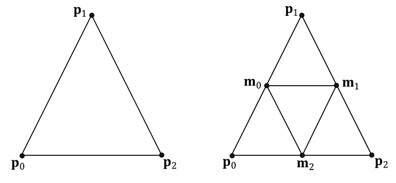
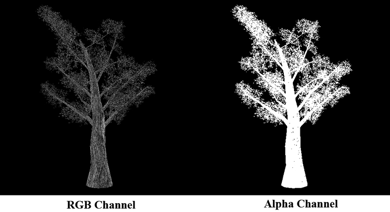
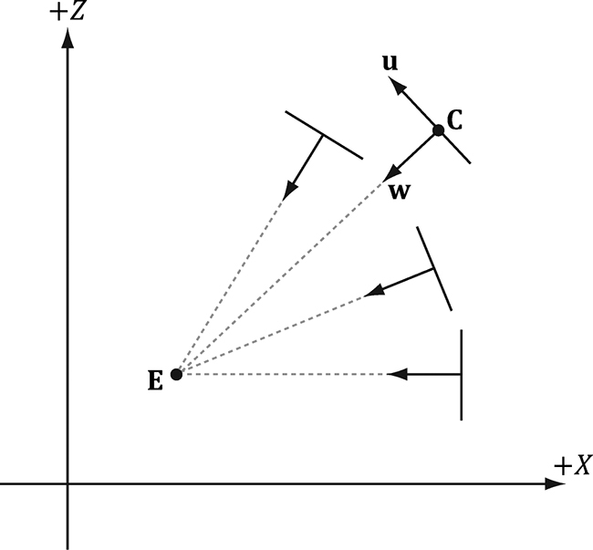
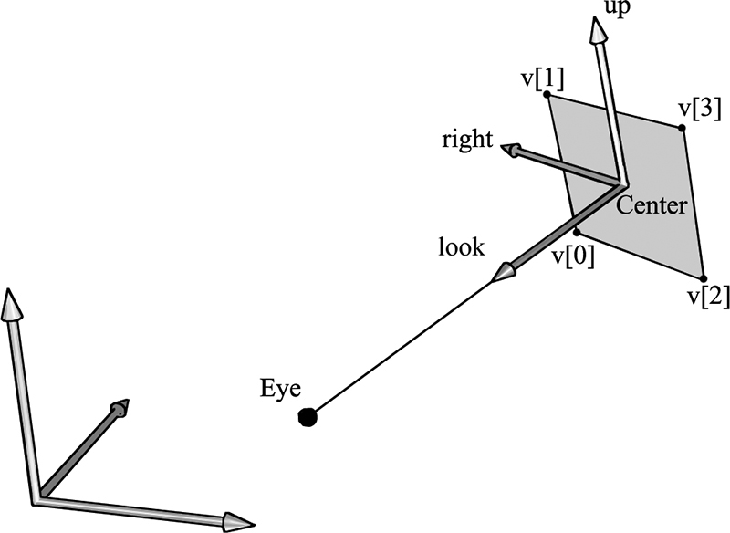
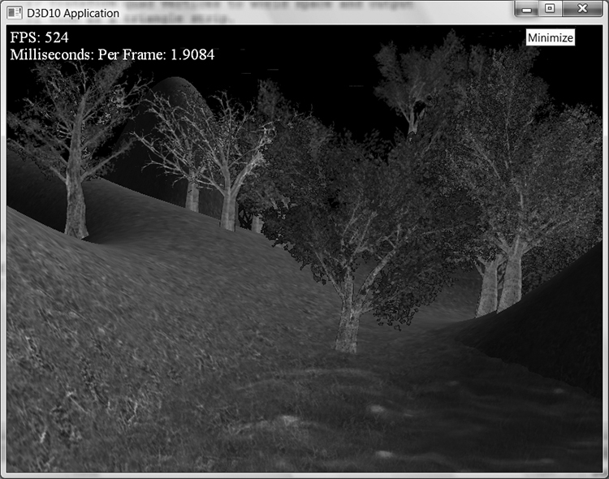
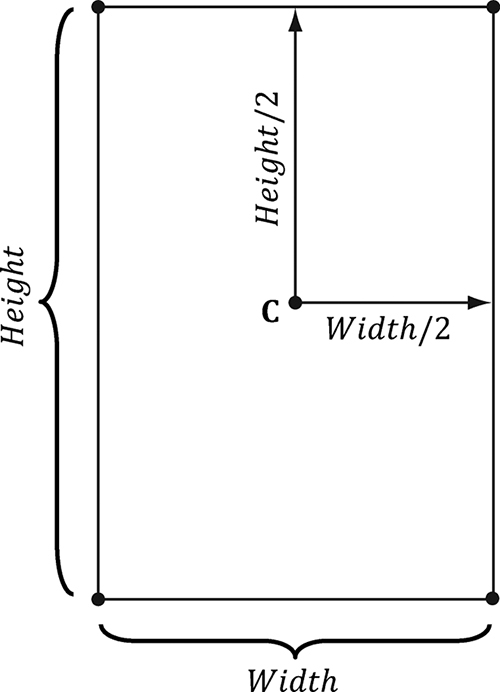
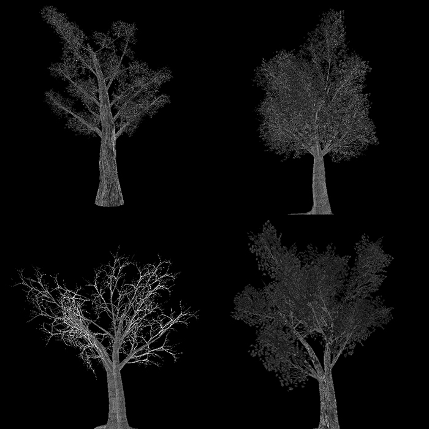
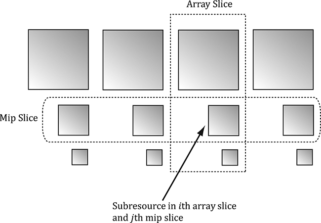
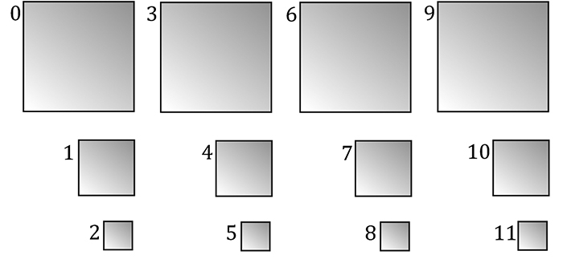
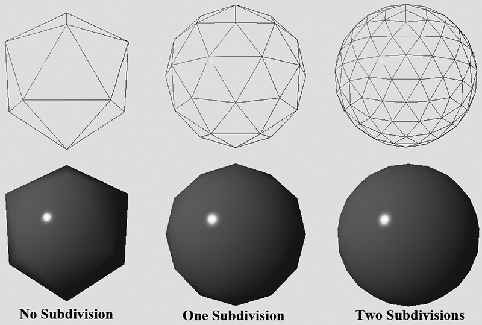

第三部分 · 进阶主题
对应示例：Tree Billboards Demo
本章学习目标（Objectives）
- 学会编写、配置几何着色器（GS）；
- 理解流输出（Stream Output）；
- 用 GS 把"一个点"扩成"一块面向相机的广告牌"——实现森林；
- 掌握纹理数组（Texture Array）与 Alpha-to-Coverage。
12.1 编写几何着色器（Programming Geometry Shaders）
GS 以完整图元（3 个三角形顶点 / 2 个线段顶点 / 1 个点）为输入，可以生成新顶点、吐出 0～N 个新图元——这是它与 VS 的本质区别（VS 只能 1 进 1 出）。
// 典型 GS：接收一个带邻接信息的点，输出 4 个顶点的 quad [maxvertexcount(4)] void GS(point VertexOut gin[1], uint primID : SV_PrimitiveID, inout TriangleStream<VertexOut> triStream) { // 由 gin[0] 与世界大小构造 4 个角点，逐个 Append triStream.Append(v[0]); triStream.Append(v[1]); triStream.Append(v[2]); triStream.Append(v[3]); triStream.RestartStrip(); }
- [maxvertexcount]：一次调用最多输出的顶点数（影响性能，越小越好）；
- 输出流：PointStream / LineStream / TriangleStream，Append 加入顶点，RestartStrip 开新图元；
- SV_PrimitiveID：系统值，图元编号，可用于随机选择纹理/噪声；
- GS 可选 stream-out：把顶点写到 GPU 缓冲而不是光栅化（粒子系统、网格缓存用）；
- 带邻接（adjacency）拓扑可拿到相邻图元信息。
⚡ 性能提示：GS 在 GPU 上运行效率不如精心设计的 VS 路径（历史上还会强制内部展开），能不用就不用；本章用它纯粹是为了教学"扩点成面"这一模式。
12.2 树广告牌演示（Tree Billboards Demo）
广告牌（Billboard）= 永远面向相机的 quad。一棵树的"远景色"只需要一张带 alpha 通道的图片 + 一块对准相机的矩形——成百上千棵树就用成百上千个"点"表示，GS 把每个点扩成 quad，再让相机右向量/上向量把 4 个角顶点摆正朝向。地面起伏处 quad 要随地形高度/坡度倾斜（书中代码把 4 个顶点 y 对齐到地形采样高度）。
12.3 纹理数组（Texture Arrays）
几十种树若各自一张纹理就要切几十次绑定；解法是把它们打包成纹理数组（Texture2DArray）：一次绑定，着色器里用第三维下标选子纹理。DX12 里纹理数组的子资源按"数组层 × mip 层"线性编号（书中图示 subresource 索引计算），创建时数组大小 >1 即可，SRV 创建描述符时指定 FirstSlice/NumSlices 还能当"视图"裁剪使用。
12.4 Alpha-to-Coverage（A2C）
树的边缘像素用 alpha 渐变过渡时，普通混合需要排序且会把背景"透"出来；A2C 用 MSAA 把 alpha 转换成"覆盖率掩码"——alpha 值决定该像素几个子样本通过，边缘呈现漂亮的抗锯齿镂空，且不需要排序（等效于 clip 的抗锯齿版）。开启方式：BlendDesc.AlphaToCoverageEnable = true。
💡 读完做实验：把 maxvertexcount 改小看显示残缺；换树纹理数组顺序；关 A2C 看边缘差异。
本章小结
- GS：图元进、图元出，可增删顶点；stream-out 可把结果写回缓冲。
- 广告牌技术：点 → 面向相机的 quad，森林/粒子/草的基础。
- 纹理数组一次绑定多张同格式纹理，第三维选层。
- A2C = alpha + MSAA = 无排序的抗锯齿镂空。
🖼️ 原书插图（10 张，点击展开）









